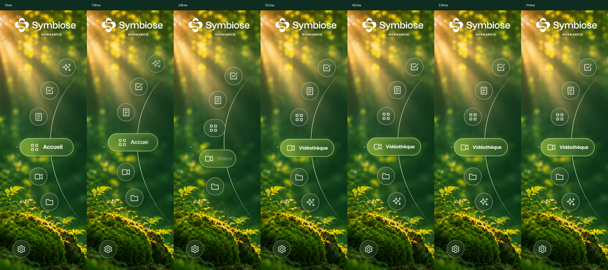
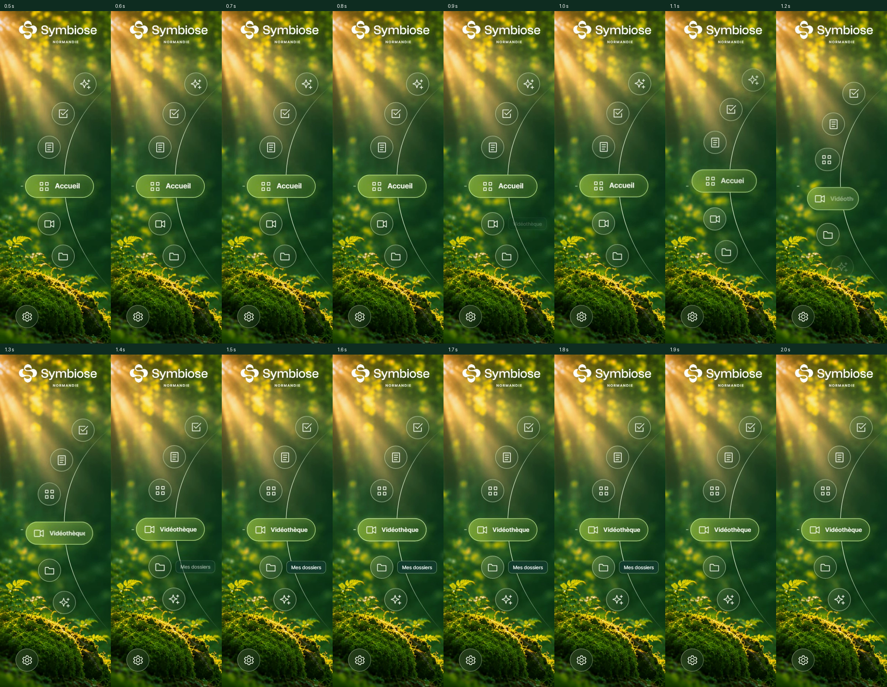
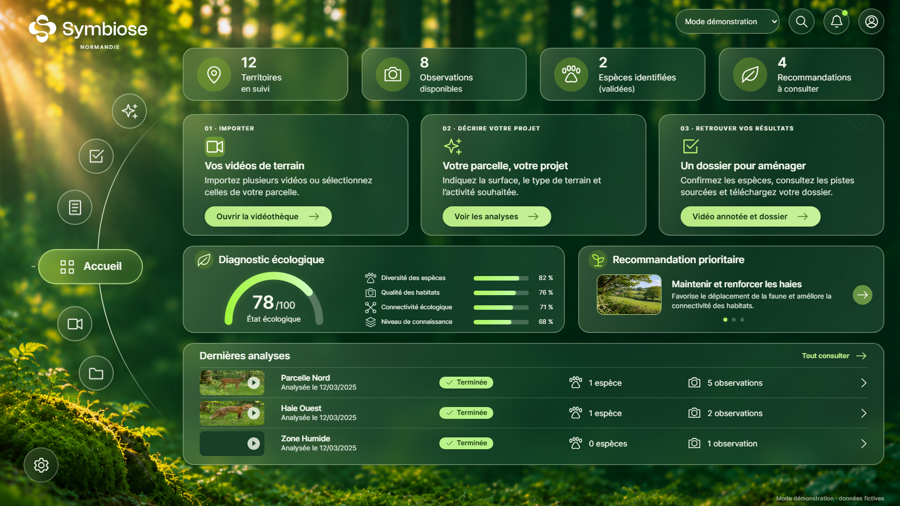
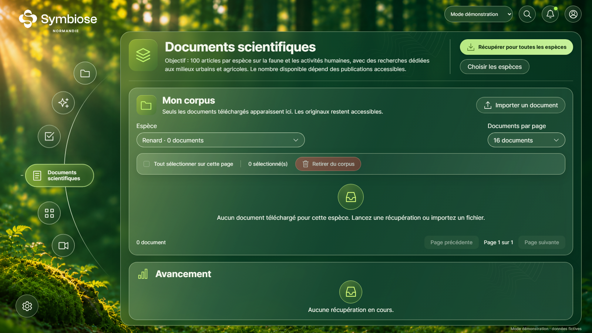
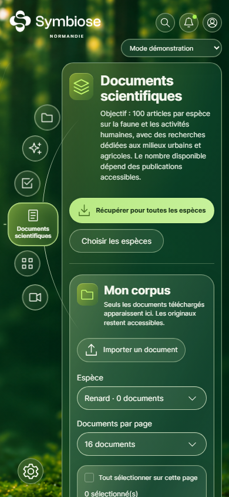

Étape 12 · 10 novembre 2026 · Vue 3, TypeScript, sans nouvelle dépendance.
Progression commune aux six rubriques, chemin cyclique le plus court, sortie masquée aux extrémités, accélération et freinage, dépassement de 2,2 % d’un cran au maximum, puis retour précis et confirmation lumineuse de 170 ms. Un cran dure 520 ms ; trois crans durent 660 ms.
Ouvrir la vidéo · Capture Playwright à 25 images/s, environ 14 secondes. La vidéo montre les six rubriques, les passages entre extrémités, les deux sens, une sélection éloignée et des clics rapprochés. Cette cadence d’enregistrement ne mesure pas la cadence de rendu de l’interface.





Compilation de production réussie. 84 tests unitaires passent. Les 16 scénarios navigateur distincts passent sur les trois suites concernées, avec contrôle du focus, audit axe de l’accueil, navigation clavier, historique, six positions finales, arc et repère fixes, cycles dans les deux sens, chemins courts, interruptions, absence de chevauchement du texte et de l’icône, réduction des animations système et application, et redimensionnement pendant le mouvement.
Les contrôles de géométrie couvrent 1920 × 1080, 1600 × 900, 1440 × 900, 1280 × 800 et 390 × 844. Validation navigateur sous Chromium ; les autres moteurs et la cadence sur matériel physique ne sont pas mesurés ici.
Le glissement facultatif et les graduations supplémentaires sont laissés de côté pour préserver les interactions et le dessin existants. La largeur de la pilule reste une interpolation CSS légère ; les déplacements utilisent translate3d et une seule boucle requestAnimationFrame.
Depuis frontend/ : npm run dev pour ouvrir l’application ; npm test pour les tests unitaires ; npx playwright test tests/e2e/symbiose-design.spec.ts tests/e2e/harmonisation-design.spec.ts tests/e2e/wheel-motion.spec.ts pour reproduire les contrôles navigateur et l’enregistrement.